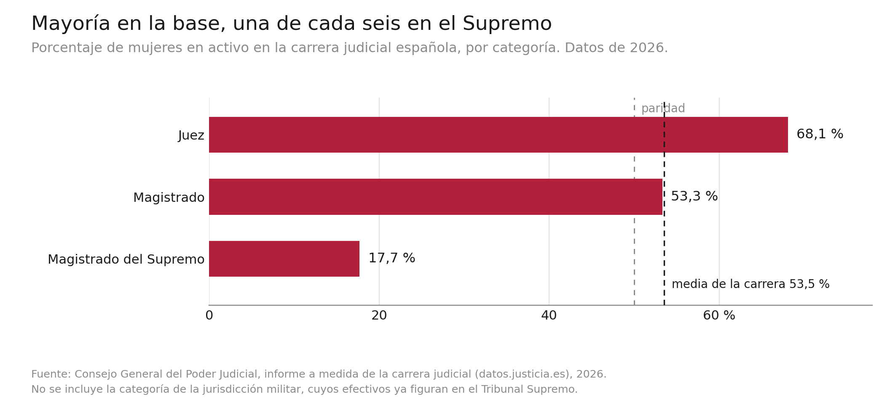

11 Género y la mirada criminológica
Los manuales de referencia y los planes de estudio en las universidades españolas han abordado la criminología feminista y la perspectiva de género de forma un tanto tangencial, y eso siendo generosas. A menudo, existe un importante desconocimiento entre quienes estudian o hacen criminología sobre lo que significa la perspectiva de género y lo que aporta en criminología, algo que también se ha observado en otros países (Renzetti 1993; Sharp y Hefley 2007; Gelsthorpe_08?) ⚠️.
Por ello, nuestro objetivo con este capítulo es que quien se inicia en la criminología comprenda qué significa eso del género como categoría de análisis y, sobre todo, qué ha supuesto incorporar el género a la criminología. Fundamentalmente, cómo introducir el género cambia las preguntas, los métodos y las interpretaciones criminológicas. Trataremos, pues, de ofrecer una síntesis que permita apreciar cómo el género transforma la mirada criminológica y, ojalá, anime también a incorporarla al quehacer criminológico.
11.1 De hombres, mujeres y diversidad en criminología
11.1.1 Las mujeres como no-sujeto en criminología
Ha quedado claro a lo largo de este manual que las disciplinas son productos humanos, históricos y socialmente determinados. La criminología, pues, es también producto y reflejo de los tiempos en los que se ha ido construyendo, lo que se observa en determinados sesgos que han sido determinantes de su devenir. Entre ellos encontramos el androcentrismo.
Así, durante buena parte de su historia, la criminología fue desarrollada por hombres que se interesaron casi exclusivamente por otros hombres. Este androcentrismo llevó a omitir habitualmente a las mujeres y, sobre todo, a invisibilizar sus experiencias (Smart 1976), dejándolas fuera del interés y el conocimiento criminológico. Como resultado, el comportamiento de los hombres y sus experiencias criminológicas se convirtieron en el estándar de lo que debía entenderse y atenderse.
El feminismo cuestionó este androcentrismo en la criminología, lo que impulsó que se incluyera a las mujeres y, sobre todo, que, paulatinamente, se formularan preguntas criminológicas que tuvieran en cuenta sus experiencias. A pesar de ello, el androcentrismo permanece de maneras más o menos sutiles. Así, la reacción ante los resultados de un estudio varía dependiendo de la muestra. Cuando se presenta un trabajo realizado exclusivamente con hombres, rara vez surge la pregunta de si esos resultados son similares o diferentes en las mujeres. Sin embargo, cuando el estudio se realiza exclusivamente con mujeres, es mucho más probable que aparezca la duda sobre su generalización: ¿ocurre lo mismo en los hombres? O, aún más grave, si los resultados son similares a los que se obtienen con hombres, se tiende a considerar que el estudio no aporta nada interesante o relevante.
Modos de mirar y de ver
Una forma sencilla de entender qué significa que una mirada esté sesgada por el androcentrismo es salir por un momento de la criminología y fijarnos en el arte, desde la pintura hasta el cine. John Berger, en Modos de ver (1972), analizó cómo las mujeres han sido representadas en la tradición pictórica occidental y cómo esa representación está organizada por una determinada relación entre quien mira y quien es mirado, que se resume en su frase: “Los hombres actúan y las mujeres aparecen” (1972, 55). Berger señala también que las mujeres aprenden a contemplarse a sí mismas siendo contempladas, de modo que la mirada de los demás puede convertirse también en una forma de autovigilancia. Esta idea conecta con el concepto de male gaze o “mirada masculina”, desarrollado por Laura Mulvey (1975) para analizar el cine. Mulvey lanza preguntas sobre quién mira, a quién se mira, cómo se mira y desde dónde se mira.
Si te gustan las series, Fleabag juega de una manera especialmente interesante con estas ideas. Durante buena parte de la serie, la protagonista rompe la separación convencional entre personaje y espectador/a al mirar directamente a la cámara y dirigirse a quien está viendo la serie. Los demás personajes no perciben esa ruptura de la cuarta pared. Es decir, no la ven cuando actúa fuera de lo que esperan de ella como mujer. Pero, en un momento determinado, un hombre importante para ella sí ve que lo hace. Para él resulta extraño: “¿Qué fue eso? ¿Adónde te fuiste?”, le pregunta. Para ella, el momento resulta extraordinariamente sorprendente y emocionante: por fin, alguien de su entorno la ha visto realmente.
La escena permite experimentar que podemos tener delante a una persona, observarla, creer que sabemos algo de ella y, sin embargo, interpretar lo que hace a través de esquemas sesgados sobre cómo son las mujeres. Verla implica algo más: supone reconocerla como sujeto, con voz propia, y no solamente como objeto pasivo de nuestra mirada.
Ninguna mirada es, pues, totalmente inocente ni totalmente neutra, tampoco la criminológica. Y aquí aparece una pregunta para ti: ¿Qué personas o experiencias pueden haber estado delante de tus ojos y, sin embargo, han quedado fuera de tu mirada criminológica?
11.1.2 La ineludible brecha de género
Una razón esgrimida incluso en la actualidad para estudiar fundamentalmente a hombres es que las mujeres eran y son pocas en las estadísticas oficiales. Pero precisamente ahí aparece el sesgo: si una disciplina pretende entender, explicar y actuar sobre la delincuencia, la menor participación delictiva de la mitad de la población no debería ser una razón para excluirla, sino una cuestión del máximo interés.
Cuando comparamos los datos sobre delincuencia de mujeres y hombres, la primera conclusión es muy clara: los hombres presentan tasas de participación delictiva superiores a las de las mujeres en buena parte de los delitos registrados. Por lo general, las mujeres representan únicamente entre el 10% y el 20% de las detenciones e investigaciones policiales y el 19,4% de las sentencias condenatorias firmes, un porcentaje que rara vez supera el 30% (Applin_18?; Instituto Nacional de Estadística 2024; Ministerio del Interior 2024) ⚠️.
En el ámbito penitenciario, la brecha es todavía mayor: las mujeres en prisión representan entre el 2% y el 9% de la población privada de libertad a nivel mundial —con un promedio global del 6,8%— (Association for the Prevention of Torture 2024; Walmsley_24?). A esta realidad bien contrastada la denominamos brecha de género en delincuencia.
![Gráfico de barras horizontales que muestra el porcentaje de mujeres entre las personas menores de edad detenidas o investigadas en España en 2025, por tipo de infracción, ordenado de mayor a menor. Encabezan la lista los hurtos, con un 41 por ciento, seguidos de los malos tratos en el ámbito familiar y las falsedades, con un 25 y un 24 por ciento, las lesiones con un 22 y las estafas con un 21. En la parte baja aparecen el robo con fuerza y los delitos contra la seguridad vial con un 5 por ciento, la agresión sexual y la sustracción de vehículos con un 2 por ciento, y la agresión sexual con penetración con un 1 por ciento. Una línea vertical discontinua marca la media de todas las infracciones, situada en el 21 por ciento.](images/brecha-genero-tipo-delito.png)
Sin embargo, cuando nos preguntamos qué estamos midiendo, cómo lo estamos midiendo y si las diferencias son iguales para todos los comportamientos, aparecen matices importantes. La distancia entre mujeres y hombres en los datos oficiales es incuestionable y de gran magnitud en todo el mundo y a lo largo del tiempo, pero la distancia se ensancha o estrecha según la gravedad del delito. En los delitos graves y más lesivos, como el homicidio y los delitos sexuales, la participación de mujeres se reduce al mínimo (excepto en el filicidio). A nivel mundial, y de forma similar en España, las mujeres cometen únicamente en torno al 10% de los homicidios (GonzalezAlvarez_18?; UNODC 2019; UNODC_24?) ⚠️. En el caso de las agresiones sexuales, la prevalencia de mujeres agresoras es tremendamente reducida, situándose en los datos oficiales de detenciones y condenas en torno al 1%-2%, por ejemplo, en España (LopezGutierrez_20?; Instituto Nacional de Estadística 2024) y entre el 2% y el 5% en encuestas de victimización internacionales (McLeod 2015) ⚠️.
![Figura con dos paneles de barras horizontales. El panel izquierdo muestra el porcentaje de mujeres entre las personas penadas en prisión en España en 2023, por grupo delictivo, ordenado de mayor a menor: falsedades 16 por ciento, Administración de Justicia 14, Administración y Hacienda públicas 13, salud pública 11, resto de delitos 10, homicidio 9, libertad 9, patrimonio y orden socioeconómico 8, lesiones 7, orden público 7, seguridad del tráfico 4, relaciones familiares 4 y libertad sexual 2. Una línea vertical discontinua marca la media, situada en el 7 por ciento. El panel derecho muestra el mismo porcentaje según el grado de clasificación penitenciaria: 4 por ciento en primer grado, 6 en segundo y 13 en tercero, con una flecha ascendente rotulada «menos régimen cerrado, más mujeres».](images/mujeres-prision-espana.png)
En cambio, cuando estudiamos delitos menores, la diferencia se estrecha. Igualmente, si utilizamos encuestas de autoinforme, que permiten aproximarse a comportamientos que no han sido detectados por el sistema y que incluyen conductas antisociales que no se consideran delitos, las diferencias se reducen considerablemente. La mayoría de las conductas antisociales presentan prevalencias similares en chicas y chicos, especialmente cuando se trata de actos que no causan un daño directo a otras personas. Además, el tipo de delitos y conductas antisociales más comunes son los mismos en mujeres y hombres (ver Bartolomé Gutiérrez 2021 para una revisión).
La diferencia entre mujeres y hombres vuelve a ser grande cuando pasamos de analizar la participación en determinadas conductas y sus consecuencias, a analizar qué variedad de delitos comete, con qué frecuencia y durante cuánto tiempo mantiene una actividad delictiva. La persistencia en carreras criminales severas y la reincidencia muestran diferencias importantes, siendo significativamente más frecuentes en hombres (Moffitt et al. 2001; Cauffman_15?; Capdevila_15?) ⚠️.
La brecha se mantiene cuando pasamos de estudiar la delincuencia a estudiar la victimización. Mujeres y hombres tienen un riesgo similar de sufrir delitos contra la propiedad, pero no tienen el mismo riesgo de ser víctimas de violencia ni en los mismos contextos. Las mujeres presentan una mayor exposición a la violencia sexual y a otras formas de violencia interpersonal que se producen en relaciones de pareja o en contextos de proximidad, mayoritariamente, a manos de hombres (European Union Agency for Fundamental Rights 2024; UNODC_24?). Los hombres, en cambio, presentan una mayor exposición a diversas formas de violencia a manos de otros hombres, en contextos de ocio, competición o lugares públicos.
Los cambios tecnológicos han generado un nuevo entorno en el que pueden ocurrir delitos, pero los patrones señalados se mantienen. Mientras mujeres y hombres se implican de forma similar en piratería digital y hacking y sufren fraude o estafas online también de forma similar, en los ciberdelitos de carácter expresivo, relacional y sexual los perpetradores son mayoritariamente hombres y las víctimas, mayoritariamente, mujeres (Donner 2016).
Finalmente, la investigación ha mostrado repetidamente que tanto los factores de riesgo/protección, como los procesos implicados son muy similares en mujeres y hombres (Kruttschnitt 2016). Y, sin embargo, presentando más semejanzas que diferencias, encontramos una brecha significativa en todos los lugares del mundo y a lo largo del tiempo en delitos graves y violentos, ya sea en el mundo offline o en el mundo online. Estas semejanzas y diferencias entre mujeres y hombres constituyen un punto de partida para formular preguntas y explorar respuestas. Y aquí entra ya la razón por la que a esta distancia en la conducta delictiva de mujeres y hombres la denominamos brecha de género: comparamos datos de mujeres y hombres, es decir, habitualmente, distinguimos a las personas por su sexo, en cuanto categoría de carácter biológico, pero no hay evidencia de que esa brecha se explique suficientemente por ese sustrato biológico. Por tanto, en gran medida, las diferencias responden a cuestiones sociales y estructurales asociadas al sexo, que es lo que denominamos género (más adelante precisaremos más qué significa género). Y es el género lo que también explica que el sexo fuera la variable que mejor predecía el delito y, sin embargo, como señala Kimberly J. Cook (2016), los autores de las grandes teorías la “amputaron” o neutralizaron en sus explicaciones.
11.1.3 Del binarismo a la diversidad: sexo, sexualidad e identidad
A partir de la inclusión de las mujeres, la criminología ha operado bajo una distinción binaria entre mujeres y hombres, por una parte, y entre sexo (categoría biológica) y género (categoría social referida a lo femenino y lo masculino), por otra. Sin embargo, una parte de la criminología contemporánea ha cuestionado que estas categorías puedan entenderse como realidades simples y estancas, pues además de sexo y feminidad/masculinidad, existen otros aspectos vinculados, pero no intercambiables, que pueden ser relevantes para entender las experiencias criminológicas como orientación e identidad afectivosexual, expresión e identidad de género. Esto obliga a ampliar, nuevamente, la mirada criminológica en relación con esas dimensiones hacia las personas LGTBIQ+ (Valcore et al. 2021).
Uno de los primeros problemas para ello ha sido la falta sistemática de datos y de teorización. Durante mucho tiempo, apenas se recogía información sobre personas LGTBIQ+. Los escasos estudios disponibles se concentraron, además, en ámbitos muy concretos, fundamentalmente ciertas formas de victimización, como el acoso escolar o los delitos de odio. Quedaron en segundo plano su posible participación en la comisión de delitos, sus experiencias como víctimas de otro tipo de delitos o su relación con las instituciones de justicia legal (Woods_15?; Office of Juvenile Justice y Prevention, s. f.) ⚠️.
11.2 La mirada feminista en criminología
A lo largo de la historia, algunas mujeres cambiaron su lugar en el mundo y salieron del ámbito privado a la actividad pública. En el ámbito criminológico encontramos ejemplos tempranos de mujeres que visitaron prisiones, acompañaron a personas presas, promovieron su reinserción, participaron en la reforma penitenciaria o intervinieron en la elaboración de leyes, como has visto en el cuadro 10.1 ⚠️.
Estas mujeres fueron y siguen siendo influyentes. Sin embargo, su trabajo individual no fue suficiente para transformar de manera profunda la mirada criminológica. Ese impulso transformador comenzó a finales de los años 60 del siglo XX, cuando el feminismo se extendió por el ámbito científico.
El feminismo se define, en esencia, como un compromiso político, ético, social y científico con la equidad, cuyo interés central es visibilizar y dignificar la vida de las mujeres y conocer cómo las desigualdades de poder afectan de forma diferencial a las experiencias y conductas de mujeres y hombres. Este movimiento ha crecido amparado en los derechos humanos, porque forma parte de ese marco más amplio que defiende la dignidad de los seres humanos y la igualdad entre ellos.
Inicialmente, las criminólogas feministas concentraron buena parte de sus esfuerzos en denunciar la falta de interés de la disciplina hacia las mujeres (no se las miraba) y en desmontar los prejuicios sexistas y biologicistas presentes en las explicaciones criminológicas cuando se las incluía (no se las veía realmente). Las mujeres que delinquían habían sido consideradas habitualmente como una anomalía respecto del sujeto criminológico estándar: los hombres (Daly y Chesney-Lind 1988; Klein 1973; Smart 1976).
Así, en diferentes momentos históricos, las mujeres delincuentes fueron consideradas enfermas o moralmente desviadas. Es destacable que se recurrió a estereotipos sexistas que las representaban como emocionales y poco racionales, pasivas o incapaces de algo que no fuera cuidar para explicar que delinquieran menos; y, a la vez, como manipuladoras, frías y calculadoras cuando lo hacían. Estas imágenes condicionaron la interpretación de la delincuencia cometida por mujeres, pero además contribuyeron a construir una actitud de profunda desconfianza y sospecha hacia aquellas mujeres que no se ajustan a las expectativas sociales de la feminidad. Esta sospecha aún es observable en cualquier ámbito cuando las mujeres actúan fuera de lo que se espera de ellas (Martin y Flynn 2026).
Paulatinamente, la criminología feminista ha ido abordando todos los fenómenos de interés en criminología hasta consolidarse como un área de producción teórica, empírica, política y aplicada que sitúa las experiencias de las mujeres y las relaciones de género en el centro de cualquier análisis criminológico (Barberet 2014). Como es un área de producción, existen diversas corrientes feministas.
De malas mujeres
Mi tesis (2001) fue sobre delincuencia juvenil autoinformada en chicas. Cuando presentaba datos comparativos que mostraban con rotundidad que las chicas cometían menos conductas violentas, recibí muchos comentarios sobre lo “engañosos” que podían ser esos datos: que las chicas eran menos sinceras, que eran dañinas de formas que no se recogían en esas encuestas, que lo hacían con “ocultación” o en el ámbito privado, como había defendido Pollak (1950). Un comentario que recuerdo especialmente, porque me lo hicieron el día que la defendí, fue: “De acuerdo: cometen menos violencia (con tono condescendiente), pero cuando una mujer es mala, es muy mala”. Y yo pregunté: “¿Y cuándo un hombre es malo, cómo es?”
Esta aparente contradicción entre asumir que las mujeres cometen menos violencia y, a la vez, buscar argumentos que resten valor positivo a ese hecho revela que la conducta de las mujeres no se interpreta únicamente en función de lo que hacen o no hacen, sino también de las expectativas sociales sobre cómo deben ser y de su posición social. En el rechazo a admitir su baja participación en la violencia se esconden interpretaciones prejuiciosas muy marcadas: ¿cómo van a ser las mujeres mejores…?, aunque la tesis no contenía, evidentemente, ningún juicio de valor semejante. Y las respuestas suelen ser igualmente tendenciosas y ambivalentes, como lo han sido en la propia criminología: delinquen menos, pero, si lo hacen, rompiendo precisamente con lo que se considera natural en ellas, entonces son monstruos o brujas (Francés Lecumberri 2021) o muestran su maldad oculta.
Estos razonamientos paradójicos reflejan lo que la criminología feminista ha denominado doble desviación: una mujer que comete un delito no solo rompe una norma penal, sino también las expectativas asociadas a la feminidad y, especialmente, al lugar social que se le atribuye como responsable del cuidado y del ámbito privado. La mujer que delinque transgrede así dos tipos de normas: las penales y las que definen cómo y dónde debe estar una mujer.
La doble desviación estaba muy presente en la criminología de principios del siglo XX, pero aún es fácilmente rastreable en la actualidad, tanto en la representación mediática de las mujeres que delinquen como en la respuesta social que reciben y, en ocasiones, en una criminología que permanece ciega al género. La investigación reciente sigue mostrando que las mujeres que cometen delitos violentos pueden ser representadas como especialmente desviadas o poco femeninas. Un ejemplo particularmente expresivo lo podemos observar en el juicio de la madre que asesinó a sus hijos en Pilas; la Fiscalía la caracterizó como “monstruo de madre”, “un bicho” que no califica los hechos, sino que valora cómo es, especialmente, como madre.3
11.2.1 Desafíos al hacer investigación
La criminología feminista ha puesto mucho énfasis en que “añadir mujeres y agitar” (Daly y Chesney-Lind 1988) no basta para construir una criminología que trate de comprender sus experiencias y dar respuesta a sus necesidades. Es necesario cuestionar la posición misma desde la que se ha construido históricamente el conocimiento criminológico y plantear nuevas formas de hacerlo (Gelsthorpe_08?; Barberet y Larrauri 2019).
En relación con quién produce el conocimiento, el androcentrismo sigue muy presente en la disciplina. Chesney-Lind (2020) ⚠️ documenta una persistente desigualdad en la valoración y el reconocimiento del trabajo académico de las mujeres en criminología. Según sus datos, el 73,8 % de las presidencias de asociaciones como la American Society of Criminology han sido ocupadas por hombres blancos, mientras que menos del 1 % de las autoras en publicaciones de alto impacto son mujeres pertenecientes a minorías. Estas desigualdades importan porque la producción del conocimiento científico nunca se desarrolla en un vacío social, como venimos señalando en este manual.
![Figura con dos paneles. El superior es una línea temporal de 1960 a 2020 con un punto por cada galardonado con el Premio Edwin H. Sutherland de la American Society of Criminology; los puntos de los hombres son grises y los de las mujeres granates. Desde 1960 hasta 1991 todos los puntos son grises, tramo sombreado y rotulado como treinta y dos años sin ninguna mujer. A partir de 1992 aparecen siete puntos granates, etiquetados con los nombres de Lee Robins, Joan McCord, Nicole Rafter, Ruth D. Peterson, Cathy Spatz Widom, Sally S. Simpson y Peggy Giordano. El panel inferior es un gráfico de barras con el porcentaje de mujeres entre los nombramientos de Fellow de la misma sociedad por periodos: 8 por ciento entre 1965 y 1979, 17 entre 1980 y 1989, 16 entre 1990 y 1999, 28 entre 2000 y 2009, 38 entre 2010 y 2019 y 41 entre 2020 y 2026. Una línea discontinua marca el 50 por ciento, rotulada como paridad, que ninguna barra alcanza.](images/asc-genero-reconocimiento.png)
Este androcentrismo se ha visto apuntalado por determinadas concepciones de la ciencia. Según Shallenberger y Bowman (2026), el predominio de un entorno positivista ha contribuido históricamente a marginar la epistemología y el activismo feministas al percibirlos como una posible distorsión del rigor científico. Y es que la epistemología feminista ha cuestionado precisamente que el rigor científico dependa de mantener una separación estricta entre quien investiga y aquello o aquellas personas que investiga (Gelsthorpe_08?; Rajah, Palmer, y Duggan 2022). El feminismo defiende que la subjetividad, la reflexividad y unas relaciones de investigación menos jerárquicas pueden contribuir a identificar las relaciones de poder que permanecen ocultas cuando quien investiga se presenta como neutral.
Pero hacer visibles nuevas experiencias introduce un importante desafío. Para estudiar la desigualdad necesitamos identificar grupos y comparar posiciones. Sin embargo, las categorías pueden terminar presentando como homogéneos grupos que son internamente diversos. Las mujeres no son un grupo (y, en ningún caso, un colectivo) cuyas experiencias puedan darse por supuestas. Ver realmente en criminología exige, por tanto, revisar también los esquemas que subyacen a nuestras herramientas de investigación. Por ello, la criminología feminista ha utilizado los métodos cualitativos y narrativos para permitir que sean las propias personas quienes cuenten, expresen, reflexionen o discutan sobre sus experiencias en sus propios términos. Además, se debe proteger la seguridad y dignidad de las mujeres u otras personas vulnerables, dándoles el poder de definir sus propios problemas sin ser revictimizadas (Barberet y Larrauri 2019).
Conviene hacer hincapié en que la investigación feminista incorpora una dimensión de praxis, entendida como la relación entre conocimiento y transformación social. El feminismo tiene un compromiso ético y práctico con la equidad y, por tanto, la criminología feminista se reconoce en y aboga por el activismo académico. En palabras de Rajah, Palmer, y Duggan (2022), “las criminólogas feministas (…) deberían adoptar el feminismo como una praxis más que como una identidad. La praxis implica vivir y hacer feminismo con una intención deliberada, de una manera sensible a las diferencias de poder y a las posibilidades de cambio” ⚠️ [falta página]. Y ese mismo compromiso con la justicia social exige que la investigación sea rigurosa y ética en todo su proceder.
Lo personal es político, también en criminología
La conocida expresión lo personal es político condensa una de las aportaciones fundamentales del feminismo y adquiere una dimensión epistemológica en las ciencias sociales.
En los años 70, mujeres comprometidas con la igualdad comenzaron a poner en común sus experiencias personales de discriminación y desigualdad. Esto permitió evidenciar que sus experiencias personales se repetían y funcionaban como patrones. La violencia en la pareja, el control sobre la sexualidad o la violencia sexual dejaron así de ser únicamente problemas personales (algo que le ha pasado a una mujer) para convertirse también en fenómenos sociales (algo que les pasa a las mujeres) que requerían respuestas desde la política pública y que podían y debían ser investigados científicamente.
De acuerdo con ello, escuchar las experiencias de las mujeres se consideró y se considera un buen punto de partida para formular preguntas y explorar respuestas criminológicas. Cook (2016) considera incluso que las propias experiencias y vivencias personales de las investigadoras enriquecen el análisis.
11.2.2 Y ahora, hablemos de género
La perspectiva de género nació y se ha desarrollado vinculada al movimiento feminista, por lo que la hemos situado en este marco. El género se introdujo por el feminismo como una de sus principales categorías de análisis para superar, precisamente, el androcentrismo y el sexismo presentes en cualquier ámbito de la vida social y del conocimiento científico. Con ello, el feminismo buscaba desplazar la atención desde las diferencias biológicas entre mujeres y hombres (sexo) hacia las formas en que las sociedades interpretan esas diferencias, les atribuyen significados sociales y establecen expectativas, roles y relaciones jerárquicas entre mujeres y hombres. Por tanto, género y sexo no son sinónimos ni intercambiables. El sexo puede utilizarse como una categoría individual y demográfica, pero el género no debe usarse así, aunque a menudo se haga.
La perspectiva de género se define como el ejercicio científico de indagar sobre cómo la desigualdad entre mujeres y hombres influye en sus decisiones y experiencias y en las respuestas sociales que reciben. Dado que el significado de género se ha ido ampliando y haciendo más complejo a medida que la investigación feminista avanzaba, necesitamos profundizar un poco más en su significado, para abordar, posteriormente, cómo se aplica al análisis criminológico.
Podemos destacar tres formas de concebir el género, que no son completamente sucesivas ni excluyentes: el género entendido como roles y expectativas sociales, como estructura de relaciones de poder y como práctica situada.
En un primer momento analítico, muy influido por las corrientes del feminismo liberal de la igualdad, el género se conceptualizó como un constructo social: un conjunto de expectativas, estereotipos y roles sociales sobre la feminidad y la masculinidad. Bajo este prisma se argumentaba, por ejemplo, que la brecha de género reflejaba el éxito de una socialización que educaba a las chicas para ser pasivas, dóciles, conformistas y responsables del cuidado, así como la falta de oportunidades para cometer la mayoría de los delitos.
Esta perspectiva permitió dar un primer paso importante: las diferencias entre hombres y mujeres dejaron de considerarse simplemente como una consecuencia natural de su sexo y comenzaron a relacionarse con procesos sociales. Sin embargo, no se indagó sobre una cuestión esencial: ¿por qué y para qué existen en la sociedad unas expectativas, roles y oportunidades diferentes para mujeres y hombres?
Esta pregunta propició que diferentes corrientes del feminismo, entre ellas el feminismo radical y el marxista, desplazaron la atención hacia las estructuras sociales que producen y mantienen las desigualdades a través, precisamente, de la socialización, las relaciones y las oportunidades diferenciales. El género comenzó a analizarse, pues, como una estructura social asimétrica que ordena la sociedad y distribuye de manera desigual posiciones sociales, recursos, oportunidades y poder (Gelsthorpe y Morris 1988). La estructura de dominación que organiza las relaciones sociales en nuestro entorno y contribuye a producir y legitimar la subordinación de las mujeres se ha denominado patriarcado.
Pero la propia capacidad crítica del feminismo llevó a cuestionar, también, esta concepción del género, básicamente porque presentaba el patriarcado como un sistema homogéneo, monolítico. Eso se traducía en que la experiencia de todas las mujeres parecía común, con el riesgo de convertir a “la mujer” en un sujeto universal. Además, no explicaba las diferencias de poder entre los hombres. Como señalan Miller y Mullins (2006b), el género es complejo, contingente y diverso. Esto implica desplazar nuevamente la atención hacia las distintas posiciones (lugares sociales) que las personas ocupan dentro de los sistemas de género, tanto mujeres como hombres, y hacia la diversidad de formas en que esas posiciones se experimentan, reproducen y negocian. Es decir, no existe una única forma de estar en el mundo, ya sea como mujer o como hombre, y cada persona puede vivir y experimentar lo que significa, ofrece y exige socialmente ser una mujer o un hombre de una manera relativamente diferente.
De acuerdo con ello, el género puede entenderse también como algo que se construye y se negocia activamente en situaciones concretas. El género se concibe, en este sentido, como una práctica, una acción social situada y relacional, que adquiere significado en la interacción con otras personas y dentro de determinadas relaciones sociales. La propuesta de doing gender expresa precisamente esta idea (West y Zimmerman 1987). Las personas “hacen género” en sus interacciones cotidianas y mediante sus acciones, reproduciendo, negociando o cuestionando las expectativas asociadas a las posiciones de género.
Ahora bien, las prácticas son situadas porque se producen en un contexto determinado. En este sentido, coincidimos con Miller (2014) en la necesidad de prestar siempre atención a la estratificación de género y a la interseccionalidad, entendida como la interrelación del género con otras estructuras de poder como la raza/etnia, la edad o la ciudadanía.
Interseccionalidad
La interseccionalidad trata de comprender cómo distintas relaciones de poder se entrelazan y producen experiencias sociales diferenciadas. Las interrelaciones entre sexo, género, racialización, edad, clase social, estatus de ciudadanía, orientación sexual y otras desigualdades configuran una “matriz de dominación” (Burgess-Proctor 2006) que sitúa a cada persona en una posición social particular; en el ámbito de la criminología esta posición condiciona tanto su riesgo delictivo como sus experiencias de victimización o las respuestas sociales.
Por ejemplo, el género se entrecruza con la clase social, en fenómenos como la feminización de la pobreza y los delitos de supervivencia; con la racialización, que puede implicar para las mujeres gitanas una mayor exposición al control policial, a condenas más severas y a distintas formas de exclusión; con la migración, pues la extranjería y el desarraigo pueden actuar como barreras institucionales que dificultan su trayectoria dentro del sistema penal; y con las identidades de género y orientaciones sexuales no normativas, como veremos más adelante.
Así, la perspectiva interseccional permite entender que las mujeres comparten determinadas experiencias de desigualdad, pero que estas se articulan de manera diferente según su posición dentro de la matriz amplia de dominación, dando lugar a experiencias diversas y situadas.
En esta línea de tratar de articular la dimensión de práctica social con la dimensión estructural y relacional de poder, una propuesta muy interesante es la de Raewyn Connell. Connell (1995) denomina orden de género al patrón histórico y socialmente construido de relaciones de género que organiza las posiciones desiguales de mujeres y hombres. Ese orden macrosocial se expresa en normas, mandatos y expectativas que definen lo que se considera apropiado para mujeres y para hombres y el lugar que les corresponde en la sociedad. A un nivel intermedio, ese orden se naturaliza y legitima a través de relaciones de poder, de las relaciones afectivosexuales y reproductivas y de la división sexual del trabajo.
Pero, y aquí está lo novedoso con respecto a otras propuestas estructurales, las personas no son receptoras pasivas de las normas, expectativas y mandatos de género, ni se comportan igual en todas sus relaciones personales y sociales, sino que tienen cierta capacidad (o agencia) para interpretarlas y negociarlas y lo hacen a través de sus prácticas cotidianas. Las prácticas cotidianas de género configuran feminidades o masculinidades a través de aspectos simbólicos, discursivos y corporales que varían en función del contexto, como, por ejemplo: la ropa, el pelo, la forma de caminar o de gesticular, la forma de dirigirse a los demás, etc.
A partir de esta concepción del género, Connell analizó las distintas formas de masculinidad y propuso el concepto de masculinidad hegemónica. Esta propuesta seguramente te resulte familiar, porque es la parte de su teoría que ha tenido más impacto fuera del ámbito académico. La masculinidad hegemónica representa el ideal de masculinidad en un contexto determinado y se asocia al poder, al estatus y al prestigio institucional. Entre las prácticas cotidianas a través de las cuales los hombres pueden intentar configurar esa masculinidad podemos encontrar: evitar mostrar miedo o vulnerabilidad, resolver los conflictos mediante la confrontación, mostrarse competitivo o evitar pedir ayuda.
Se denomina hegemónica porque es la masculinidad que legitima la posición dominante de los hombres con respecto a las mujeres y de unos hombres con respecto a otros y es socialmente la más reconocida, pero no significa que todos los hombres la reproduzcan y, de hecho, la mayoría de ellos no ocupa esa posición de privilegio.
Dividendo patriarcal
La masculinidad hegemónica subsiste porque genera un dividendo material, político, cultural y sexual que beneficia a los hombres de forma colectiva. Esto explica por qué la mayoría de los hombres, aunque no encarnen el ideal hegemónico, legitiman y defienden el sistema.
El dividendo patriarcal se define como la acumulación colectiva de beneficios y privilegios que los hombres obtienen como grupo gracias a la posición subordinada de las mujeres. Así, entre las ventajas materiales y económicas, encontramos que, en promedio, los hombres obtienen ingresos superiores y controlan la inmensa mayoría de las grandes corporaciones y fortunas. Por ejemplo, solo el 14% de las personas millonarias de la lista Forbes son mujeres ⚠️. Además, los hombres se benefician colectivamente del trabajo doméstico y de cuidado no remunerado que realizan, mayoritariamente, las mujeres, lo que les permite mayor dedicación profesional. La OIT (2018) estima que el trabajo de cuidado no remunerado representa aproximadamente el 9% del PIB global. En España, se calcula que equivale a entre el 10% y el 15% del PIB nacional (Organización Internacional del Trabajo 2018) ⚠️. Además, cuando son remuneradas las tareas domésticas y de cuidado suelen recibir salarios bajos.
También se manifiesta en poder institucional y es fácil comprobar que son hombres quienes ocupan la inmensa mayoría de los altos cargos en la administración pública y de los puestos de liderazgo militar o policial. Finalmente, obtienen mayor estatus social y reconocimiento. Aún hoy, en nuestro entorno, los hombres disfrutan de un nivel mayor de autoridad intelectual, prestigio cultural e influencia ideológica o religiosa. Busca, por ejemplo, el porcentaje de estudiantes mujeres en la Universidad frente al de catedráticos/as; o el porcentaje de directoras de grandes medios de comunicación; o cuántas mujeres son líderes religiosas.
11.2.3 Vivir, delinquir y ser víctima en un mundo desigual
Ahora que contamos con el andamiaje suficiente para entender el posicionamiento feminista y la perspectiva de género, podemos dar un paso más y conocer, sucintamente, algunas aportaciones relevantes en criminología.
En relación con el delito, la criminología feminista ha puesto de manifiesto la inadecuación de las teorías que tratan de explicar el delito cuando se aplican a mujeres (Daly y Chesney-Lind 1988; Miller y Mullins 2006b); o bien no explican suficientemente por qué las mujeres delinquen, o bien no explican la brecha de género (en el capítulo 4, El delito, se observa esto en relación con las teorías ambientales y de las actividades rutinarias).
La criminología feminista ha explorado diversas vías para explicar la menor participación de las mujeres, sobre todo en la violencia: la socialización diferencial; el intenso control social ejercido históricamente sobre las mujeres; las expectativas de feminidad, que pueden funcionar como un disuasor simbólico (Boyle 2024); y un marco de oportunidades diferente. Por ejemplo, en los mercados como el de las drogas, existe un “techo de cristal” similar al del mercado laboral formal que las excluye o las relega a ciertos roles auxiliares tales como cómplices o como mulas (Schwartz y Steffensmeier 2017).
También ha dedicado un considerable esfuerzo a conocer cómo llegan las mujeres a delinquir. Kathleen Daly (1992) identificó diferentes caminos que habían transitado mujeres que habían delinquido; entre las trayectorias que identificó está una que ya has visto en capítulos anteriores: mujeres muy dañadas de niñas por experiencias de violencia y abuso (harmed-and-harming women). Lo interesante es que su trabajo abrió una vía de investigación conocida como trayectorias con género (pathways feminist) centrada en analizar cómo las experiencias y condiciones de vida constreñidas por el género configuran las trayectorias de las mujeres que delinquen (Miller y Mullins 2006b). Aunque se han encontrado una diversidad de caminos, no necesariamente iguales a los identificados por Daly, es revelador que, en diferentes lugares y a lo largo del tiempo, ciertos procesos están frecuentemente presentes:
- La superposición entre victimización, especialmente violencia sexual y violencia familiar y delincuencia.
- La criminalización de estrategias de supervivencia con las que las chicas y mujeres han intentado escapar de situaciones de conflicto, abuso o maltrato o precariedad económica. Por ejemplo, la vida en la calle, la dependencia de otras personas para obtener recursos, el consumo de drogas o la participación en actividades económicas informales (Chesney-Lind y Pasko 2013).
- El papel de las relaciones personales, especialmente la protección de relaciones de pareja o familiares, en la toma de decisiones de las mujeres.
Un ejemplo particularmente relevante de jóvenes en las que encontramos estos procesos es el de quienes tienen contacto tanto con el sistema de protección como con el sistema de justicia penal (crossover youth) (Baidawi, Papalia, y Featherston 2023) ⚠️. Más chicas y personas LGTBIQ+, especialmente personas con identidades o expresión femeninas, forman parte de este grupo de jóvenes (Office of Juvenile Justice y Prevention, s. f.; Movement Advancement Project, Center for American Progress, y Youth First 2017). Además, presentan tasas significativamente más altas de abuso sexual y victimización múltiple (Pereda_17?) y son percibidas por quienes las atienden como profundamente dañadas (Vitopoulos_18?).
El género también puede intervenir en las trayectorias posteriores al delito, incluido el desistimiento. Algunos acontecimientos considerados tradicionalmente puntos de inflexión, como el empleo estable o las relaciones de pareja, no tienen necesariamente el mismo significado e impacto para hombres y mujeres. Las responsabilidades de cuidado, la precariedad laboral y económica, el etiquetado y las propias relaciones familiares ocupan un lugar destacado en la toma de decisiones de las mujeres y condicionan frecuentemente las oportunidades disponibles para abandonar la delincuencia. Por ejemplo, se ha observado que es más frecuente que las mujeres deban alejarse de sus familiares y personas allegadas para mantener el proceso (Schwartz y Steffensmeier 2017; Giordano, Cernkovich, y Rudolph 2002).
El estudio de las trayectorias delictivas puso de manifiesto que, a menudo, existen límites borrosos o fronteras difusas entre delincuencia y victimización, lo que en la actualidad es un tema del máximo interés en criminología. Y el contacto con las instituciones no siempre ha resuelto las necesidades reales de parte de las niñas y adolescentes que atiende, sino que ha podido desencadenar una cascada de desventajas.
La visibilización de estos límites borrosos ha tenido un importante impacto aplicado impulsando el desarrollo de programas sensibles al género que, entre otras cosas, prestan especial atención al trauma. En estos programas, algunos comportamientos que habían sido interpretados institucionalmente como “problemas de conducta” pasan a comprenderse y tratarse como respuestas ante los daños sufridos (Baidawi, Papalia, y Featherston 2023) ⚠️. Ahora bien, esta comprensión de la “mochila” que llevan consigo no significa que se reste importancia a la agencia a las mujeres que delinquen. La criminología feminista defiende que las mujeres que delinquen lo hacen en el marco de unas vidas atravesadas por el género, lo cual influye en sus decisiones y dificulta el abandono, pero no las determina.
En relación con la victimización, la criminología feminista también ha mostrado que la selección de las víctimas está marcada por el género. Así, las diversas formas de violencia que reciben las mujeres a manos de hombres, especialmente hombres de su entorno cercano, se sustentan en relaciones de poder. Estas violencias actúan como una forma de control sobre la vida y la autonomía de las mujeres.
Las dificultades que ha encontrado el feminismo para visibilizar esas violencias, llevó a preguntarse por qué a unas víctimas se las reconoce y a otras no (ver capítulo 7, Las víctimas y los procesos de victimación). Así, las mujeres pueden enfrentarse a determinadas expectativas sobre cómo debe comportarse una “víctima ideal”. Posteriormente, se ha analizado, también, que los hombres pueden encontrar mayores dificultades para reconocerse y ser reconocidos como víctimas porque la vulnerabilidad se asocia a lo femenino. Así pues, el género influye en la denuncia y en la búsqueda de ayuda tanto en mujeres como en hombres en casos de violencia sexual, violencia de pareja (BarberetBartolome_21?) o en violencia filioparental (Bartolomé Gutiérrez 2025).
Finalmente, la criminología feminista también ha analizado el sistema de justicia penal como una institución de género. Por una parte, ha cuestionado la supuesta neutralidad del derecho penal. Por ejemplo, en diversos contextos históricos y sociales, las normas penales han servido para controlar la sexualidad, los cuerpos y la autonomía de las mujeres (Chesney-Lind y Pasko 2013). En España, María Luisa Maqueda Abreu (Maqueda_14?; Maqueda_17?) ⚠️ ha visibilizado cómo los denominados delitos de estatus, la regulación punitiva de la maternidad o la sanción administrativa de la prostitución en el espacio público funcionan como mecanismos de control formal e informal sobre las mujeres.
Por otra, ha estudiado cómo las fuerzas policiales, los tribunales y las prisiones reproducen la desigualdad de género; por ejemplo, al culpabilizar a las víctimas de agresiones sexuales (recuerda la injusticia testimonial y hermenéutica de Miranda Fricker (2007) explicadas en el capítulo 7, Las víctimas y los procesos de victimación), trivializar la violencia de género, o segregar o dificultar el avance profesional de las mujeres que trabajan en el ámbito de la justicia penal (Blay y González Sánchez 2022; Páez-Mérida, Bartolomé Gutiérrez, y Barberet 2026). Igualmente, el análisis de las cárceles ha mostrado que han sido históricamente diseñadas para los hombres, que no se respetan suficientemente los derechos sexuales y reproductivos de las mujeres encarceladas y que el tratamiento que se ofrece está marcado por la domesticidad (Almeda Samaranch, Camps Calvet, y Ortiz Monera 2022; Ballesteros_17?).
![Gráfico de barras horizontales con el porcentaje de mujeres en la Guardia Civil en servicio activo a 31 de diciembre de 2025, desglosado por empleo y ordenado jerárquicamente de mayor a menor rango. En los cuatro empleos superiores (teniente general, general de división, general de brigada y coronel) la cifra es cero. A partir de teniente coronel aparecen valores pequeños: 5 por ciento en teniente coronel, 8 en comandante, 4 en capitán y 11 en teniente. Entre los suboficiales los valores oscilan entre el 3 y el 8 por ciento. En la escala de cabos y guardias la cifra sube: 13 por ciento en cabo, 12 en guardia civil y 25 en guardia en prácticas. Una línea vertical discontinua marca la media del cuerpo, situada en el 11 por ciento.](images/mujeres-guardia-civil.png)
![Gráfico de barras horizontales con el porcentaje de mujeres en la plantilla de la Policía Nacional en diciembre de 2022, por escala y categoría, ordenado jerárquicamente de mayor a menor rango. Comisaria principal 14,2 por ciento, comisaria 11,2, inspectora jefa 17,0, inspectora 18,1, subinspección 11,4, oficial 15,3 y policía 17,6. Una línea vertical discontinua marca la media del cuerpo, situada en el 16,92 por ciento. Las barras aparecen agrupadas por escala: superior, ejecutiva, subinspección y básica.](images/mujeres-policia-nacional.png)

Basado en hechos reales
La investigación criminológica está basada en hechos reales y leer trabajos científicos es una forma menos espectacular, pero igualmente interesante de acercarnos a historias de delito, desviación y control social, que el true crime que consumimos habitualmente a través de series, películas o pódcast. Especialmente, leer trabajos cualitativos permite escuchar las voces de quienes vivieron esas experiencias y acercarnos a ellas.
Una vía aún menos habitual entre estudiantes de aproximarse a historias reales es leer estudios históricos. Y, sin embargo, esos trabajos permiten reconstruir cómo determinadas conductas fueron percibidas y definidas como desviadas en distintos momentos, qué respuestas y sanciones recibieron quienes las protagonizaron y cuáles fueron las condiciones de vida de las mujeres que se apartaban de los comportamientos que socialmente se esperaban de ellas.
En España contamos con investigaciones que permiten realizar este recorrido en distintos momentos históricos. Pero resulta especialmente interesante acercarse a los trabajos sobre el Patronato de Protección a la Mujer, por la cercanía temporal de estos acontecimientos y la existencia de testimonios, investigaciones, documentales y otros materiales audiovisuales.
El Patronato de Protección a la Mujer funcionó desde 1941 hasta 1985 y ejercía funciones de tutela y control sobre mujeres jóvenes consideradas en situación de peligro moral. La lectura de los diversos trabajos existentes, como los de Carmen Guillén (2026) o Laura Pascual (2025) permite conocer, más allá de las representaciones posteriores, cómo se construyeron determinadas categorías de desviación femenina y cómo estas se tradujeron en prácticas concretas de internamiento y corrección de adolescentes y jóvenes.
11.2.4 Estirando la criminología
Siguiendo a Rosa Barberet (2014), consideramos que la criminología feminista ha sido clave para “estirar” la definición de crimen y ensanchar los límites de aquello que la disciplina considera relevante como hemos visto y aún analizaremos en los puntos 4 y 5 ⚠️.
Como el potencial crítico que caracteriza al feminismo no cesa, recogemos aquí algunas vías de indagación en las que, nuevamente, la criminología estira la criminología. Rosa Barberet hace hincapié especialmente en la necesidad de mirar más allá del delito convencional y del contexto nacional, incorporando los derechos humanos y las desigualdades globales. Determinadas formas de violencia, como los delitos sexuales o el tráfico de personas con fines de explotación sexual, afectan más a las mujeres tanto en tiempos de paz como en situaciones de conflicto, porque las relaciones de género forman parte de la propia dinámica de la violencia global. En esta línea, Anne-Kathrin Kreft (Kreft_22?) ⚠️ ha puesto de manifiesto que las mismas normas de género que naturalizan y estigmatizan la violencia sexual en la vida cotidiana (cultura de la violación) silencian a las víctimas en escenarios de violencia política. Rosa Barberet también cuestiona aquellas respuestas institucionales que tratan a las mujeres víctimas de tráfico como infractoras, por ejemplo, por su situación migratoria o por estar en situación de prostitución, en lugar de reconocer la explotación que han sufrido.
Esta vía está en línea con la necesidad de introducir la zemiología (ver capítulo 4, El delito) para estudiar los daños producidos por poderes económicos y supranacionales. Igualmente, el ecofeminismo permite ampliar todavía más la concepción del daño al introducir los vínculos entre la explotación de la naturaleza, las desigualdades sociales y las relaciones de poder. Desde esta perspectiva, se plantea la necesidad de atender a sus dimensiones sociales, ambientales y de género.
De lo global a lo más local y cercano, se ha señalado que la criminología feminista debe abrirse al análisis de las diversas condiciones sociales, geográficas, políticas y religiosas que pueden generar situaciones de vulnerabilidad. Esto implica ampliar la mirada más allá de los contextos urbanos y prestar atención también a las experiencias que tienen lugar en otros espacios y territorios (Carrington et al. 2018).
Finalmente, la perspectiva feminista puede estirar la criminología, nuevamente, hacia cuestiones que todavía tienden a percibirse como individuales, privadas o íntimas, pero que están atravesadas por relaciones de poder y desigualdad, como la violencia reproductiva y obstétrica, que se ha trabajado más desde la perspectiva sanitaria que desde la criminológica. Y de manera más general, hacia cuestiones relacionadas con los cuidados, incluidas las distintas formas de violencia y maltrato que pueden producirse en estos contextos, desde la infancia hasta el final de la vida.
En esta línea, la criminología feminista ha tratado de comprender cómo la delincuencia puede afectar también a familiares de personas que han sido víctimas o han delinquido. Un ejemplo lo encontramos en las madres y cuidadoras de menores víctimas de abuso sexual. Gueta y Condry (2024) muestran cómo estas mujeres pueden experimentar formas específicas de culpabilización vinculadas a las expectativas sociales sobre la [⚠️ texto incompleto en el original: ¿maternidad?]. Esta culpabilización se suma al daño sufrido por la víctima directa y puede tener consecuencias para el conjunto de la familia, así como para los procesos legales y de recuperación posteriores.
11.3 El delito también hace género
Al hablar de la brecha de género, así como en el punto anterior hemos visto que existen diferencias entre mujeres y hombres que vienen marcadas por el género. Pero este proceso es dinámico y recíproco: el género condiciona lo que hacemos y lo que nos ocurre y, a la vez, se produce y se expresa a través de nuestras prácticas. Es decir, el delito puede entenderse como una práctica con significado social y relacional de género que contribuye significativamente a que se produzca y se reproduzca.
Es importante recordar que este análisis feminista del delito como una forma de hacer género es profundamente social y estructural. Es decir, permite conectar las estructuras de desigualdad con las acciones que lleva a cabo una persona en determinadas situaciones. Analizado de forma aislada e individualista, existe el riesgo de reducir las prácticas de género a una cuestión de representación y dejar en segundo plano las desigualdades interseccionales que condicionan las posibilidades de acción de las personas (Miller 2014). Por otra parte, esta perspectiva conecta con las teorías sobre identidad delictiva (ver capítulo 5, El delincuente), pero situando en el centro del análisis las desigualdades y las jerarquías sociales.
11.3.1 Masculinidades y delito
James Messerschmidt (1993, 2014) ⚠️ fue el pionero en aplicar a la criminología esta perspectiva de hacer género a través del delito; más concretamente, trasladó la propuesta de las Masculinidades de Connell a la delincuencia, muy especialmente a la violencia, y ha analizado profusamente cómo la violencia puede ser un recurso a través del cual algunos hombres construyen y expresan la masculinidad.
De acuerdo con su propuesta, cuando los hombres carecen de los recursos legítimos o convencionales para encarnar la masculinidad hegemónica, ese ideal de masculinidad que se asocia al éxito y al poder, el delito se convierte en un recurso para reclamar estatus, respeto o reconocimiento en su grupo. Así, jóvenes en situación de precariedad o de exclusión, que no pueden obtener reconocimiento a través del éxito educativo o laboral, de la autonomía económica o de ejercer alguna forma de poder institucional, pueden recurrir a una exageración espectacular y violenta de los estereotipos masculinos asociados a la masculinidad hegemónica. Por ejemplo, las peleas callejeras, correr riesgos extremos, el uso de la fuerza física, el control territorial o mostrar disposición a enfrentarse al peligro pueden funcionar como demostraciones de una masculinidad dominadora a través de la cual algunos hombres buscan el prestigio o el poder que no pueden conseguir institucionalmente.
La violencia no constituye un medio para conseguir cosas en estos casos, no es instrumental (o no únicamente), sino expresiva e identitaria, y adquiere significado en relación con una determinada reputación masculina (Miller y Mullins 2006b; Miller 2014). Los estudios etnográficos de Tomsen (1997) sobre las peleas en bares y discotecas, por ejemplo, permiten observar este proceso en contextos de ocio. Sus trabajos muestran cómo determinadas confrontaciones físicas entre jóvenes o entre clientes y personal de seguridad, pueden formar parte de dinámicas grupales relacionadas con el honor, la reputación y la demostración de dureza. En estos espacios homosociales, la confrontación puede convertirse en una forma de probar y negociar públicamente lo que significa “ser un hombre”. Igualmente, se ha observado en contextos callejeros que la exhibición de fuerza física, la gesticulación, los movimientos, el uso y apropiación del espacio e incluso tatuarse son formas en las que los jóvenes afrontan desafíos relacionados con la identidad y el reconocimiento. El propio cuerpo se convierte, de este modo, en un espacio en el que se representa y se negocia la masculinidad.
Aunque una parte importante de los trabajos sobre masculinidades se han referido a la violencia de hombres contra hombres, Messerschmidt también ha analizado cómo la construcción de la masculinidad puede contribuir a comprender diversas formas de feminicidio, como los de pareja o los denominados “de honor” (Messerschmidt 2017b). Igualmente, a partir de historias de vida de chicos que ocupaban posiciones subordinadas entre sus iguales, mostró cómo la violencia sexual podía convertirse en una práctica mediante la que intentaban construir y reafirmar determinadas formas de masculinidad. La violencia expresaba cierta forma de posicionarse frente a otros chicos y frente a las chicas y de aproximarse a un ideal de masculinidad dominante (Messerschmidt 2017a). En este sentido, la teoría permite entender tanto los delitos que ocurren en el ámbito público como los que ocurren en ámbitos privados; los que afectan especialmente a hombres y los que afectan especialmente a mujeres.
Además, esta misma perspectiva es útil para comprender otras brechas de género, como la que se observa en el ámbito de la salud en relación con el suicidio, lesiones y muertes por imprudencias o la baja demanda de atención sanitaria. Si se analizan fuera de ese espacio de significados, muchas prácticas de masculinidad podrían parecer comportamientos “sin sentido” y resultaría difícil comprender y prevenir conductas que suponen un daño para otras personas o un riesgo para su integridad física (piensa, por ejemplo, en los casos que aparecen en programas como Mil maneras de morir).
De acuerdo con esta teoría, las masculinidades son dinámicas y pueden transformarse; por ello, para prevenir la violencia sería necesario que los chicos valoraran otras formas de hacer masculinidad, más igualitarias y menos agresivas. Esther Fernández-Molina y Raquel Bartolomé (2020) han planteado la hipótesis de que el descenso en violencia juvenil que ha ocurrido fundamentalmente entre los chicos en España responda precisamente a esa lógica (ver también Estrada, Bäckman, y Nilsson 2016). En la misma línea, se ha encontrado que en los países más igualitarios el bienestar subjetivo de los chicos también ha mejorado (Guo et al. 2024). La teoría podría ser útil también para rediseñar las campañas y servicios de atención a hombres víctimas y para la transformación del sistema de justicia y la reforma de la cultura policial (BarberetBartolome_21?).
11.3.2 Feminidades y delito
Posiblemente la teoría de las Masculinidades sea la propuesta criminológica feminista con mayor reconocimiento dentro y fuera de la academia; quizá porque propone un proceso que da significado a la propia conducta en determinadas situaciones y en relación con otros procesos criminogénicos. Quizá, también, porque ofrece una nueva mirada al sujeto de interés clásico: los hombres. Y es que la gran laguna de la teoría de Masculinidades en criminología son las mujeres, que vuelven a quedar en segundo plano otra vez.
Para la criminología feminista, reconocer a las mujeres como agentes activos con capacidad para cometer delitos por motivos diversos es un paso esencial (Kruttschnitt 2016). Por tanto, si incorporar el género implica analizar cómo algunas conductas delictivas de los hombres expresan y construyen masculinidad, la misma lógica debería poder aplicarse a las mujeres que delinquen.
Durante algún tiempo, la respuesta de las autoras a esta cuestión consistió en generalizar la teoría sobre masculinidades a la explicación de la delincuencia de las mujeres. De esta manera, Jody Miller (2001, 2014) ⚠️ propuso que, en determinados contextos, especialmente entre grupos juveniles y de calle, algunas jóvenes pueden recurrir a prácticas de masculinidad asociadas con la dureza, la agresividad o la violencia para protegerse, obtener reconocimiento, defender su reputación o desenvolverse en entornos muy masculinizados, que al mismo tiempo las protegen de la violencia letal y las expone a situaciones de subordinación y violencia sexual (Miller y Mullins 2006a) ⚠️.
Esta generalización tiene un riesgo importante: que se considere que las mujeres que delinquen “son masculinas” o “se masculinizan”. Por ello, la criminología feminista ha trabajado en matizar esa propuesta. Así, se ha señalado que, en determinados entornos desfavorecidos, ciertas violencias, como las peleas, pueden estar relativamente aceptadas entre las adolescentes y responder a motivos que no son muy diferentes de los de los chicos, como obtener estatus, mejorar la autoestima, ganar respeto o incluso divertirse. Al mismo tiempo, ciertas motivaciones y los escenarios de estas disputas pueden estar generizados: conflictos a partir de comentarios sobre la apariencia o la sexualidad o de rivalidades de carácter relacional. Además, estas conductas violentas coexisten con otras muy diferentes, como el cuidado de hijas e hijos, parejas u otras personas allegadas. Existe un amplio terreno de superposición entre las razones por las que chicos y chicas pueden recurrir a la violencia aunque esas prácticas adquieren significados diferentes según el contexto y la posición de género de quien las realiza (Giordano y Copp 2019). La violencia no es, en sí misma, masculina o femenina, sino que adquiere su significado dentro de unas relaciones de género concretas.
11.4 Criminología queer y queering criminology
Como vimos al inicio de este capítulo, paulatinamente, se ha impulsado la incorporación de las personas LGBTIQ+ como personas de interés en criminología. En este contexto surge la criminología queer. En un primer momento, esta perspectiva buscó incorporar a las personas LGBTIQ+ a la criminología, analizando la estigmatización, criminalización y exclusión que sufren tanto como víctimas y personas infractoras como en su relación con el sistema de justicia legal.
Al igual que ocurrió en el feminismo, de ese primer empuje inclusivo se ha pasado a interrogarse por las categorías y los supuestos normativos de la propia criminología, especialmente la heteronormatividad y el binarismo. En este sentido, Carrie L. Buist y Emily Lenning (2022) defienden que queer no funciona únicamente como una categoría para designar a determinadas personas en función de su orientación sexual o identidad de género. Funciona también como un verbo; queering implica desestabilizar, cuestionar y poner en duda aquello que la disciplina ha considerado normal, natural o evidente.
(Woods_15?) ⚠️ ha realizado una importante contribución en esta línea mostrando cómo las personas LGBTQ+ han pasado por diferentes formas de exclusión dentro de la disciplina. (Woods_15?) muestra cómo la diversidad sexual y de género no era ajena a la criminología, pues estas personas fueron objeto de atención precisamente porque eran consideradas fuera de la normalidad, patologizadas y sospechosas de comportamientos antisociales. Esta situación cambió con la despenalización progresiva de la homosexualidad en buena parte de las sociedades occidentales. Paradójicamente, esto no se tradujo en la incorporación normalizada de las personas LGBTQ+ a la investigación criminológica, sino que condujo al desinterés y la invisibilización de sus experiencias.
La criminología queer ha permitido desvelar que el sistema penal y la criminología tradicional a menudo miran a las minorías sexuales y de identidad de género a través de una hipervigilancia punitiva y criminalizadora (sobrerrepresentación). Esto puede producirse, por ejemplo, en relación con determinadas conductas de supervivencia vinculadas al sinhogarismo, al consumo de sustancias o a situaciones de prostitución (Woods_17?) ⚠️. Paralelamente, se muestran incapaces de verlas en su vulnerabilidad sistémica, negándoles con frecuencia su condición de víctimas legítimas (infraaplicación de la ley). Los prejuicios sobre las relaciones homosexuales, las identidades trans o las formas no normativas de familia y pareja pueden influir en la respuesta de las instituciones y contribuir a que determinadas denuncias sean ignoradas, minimizadas o reciban una respuesta insuficiente.
Como señalan Valcore et al. (2021) y (Panfil_22?), esta paradoja resulta especialmente relevante porque muestra que la criminología no puede limitarse a preguntar si las personas LGBTQ+ están más o menos representadas en las estadísticas oficiales. También es necesario preguntarse cómo funciona el sistema legal penal cuando las personas que entran en contacto con él no encajan en sus supuestos normativos.
Series, true crime y diversidad ⚠️
Recuerda que muchas de las historias que hoy consumimos como true crime no son únicamente relatos de crímenes extraordinarios: también forman parte de una historia más amplia sobre quién define qué conductas son desviadas, quién tiene capacidad para sancionarlas y cómo el género condiciona esas definiciones y respuestas.
En dos series muy conocidas, Monstruos: La historia de Lyle y Erik Menéndez y Dahmer, la homosexualidad es una cuestión relevante por el momento social en que ocurrieron los hechos. En el primer caso, en la dramatización de la serie, la homosexualidad y la masculinidad contribuyeron a crear un contexto de ocultación, estigma y falta de denuncia. En el segundo caso, el estigma influyó en la prácticamente nula respuesta policial ante los numerosos indicios de que se estaba cometiendo violencia.
En una serie más actual, De puntillas (Tip Toe) que no se inspira en un hecho concreto real, sino que traslada a la ficción experiencias personales y situaciones observadas, podemos observar cómo el rechazo hacia las personas LGTBIQ+ por parte de hombres tratando de demostrar masculinidad, alimentado por discursos de odio y dinámicas de radicalización en Internet, contribuye a crear un contexto que desemboca en violencia extrema. La indefensión de Leo, el protagonista, ante el temor de la reacción de la policía si denuncia, es un reflejo de los procesos de hipervigilancia e infraaplicación.
La criminología queer también enfrenta retos importantes de carácter metodológico. Añadir nuevas categorías referidas a la identidad afectivosexual o de género no aporta mucho, máxime cuando son una minoría, si no se modifica la lógica que sostiene la categorización. Una investigación puede incluir incluso una categoría abierta sobre identidad y continuar considerando la experiencia normativa como el modelo de referencia. La perspectiva queer invita precisamente a ir un paso más allá y preguntarse por qué determinadas categorías se consideran normales y qué efectos produce esa normalización. Por ello, tiende a recurrir a metodologías cualitativas, como la criminología feminista, que permitan recoger las experiencias de las personas sin forzarlas a encajar en las clasificaciones previamente establecidas por las instituciones o por las disciplinas.
Tensiones entre criminología feminista y criminología queer
Como vemos, la queering criminology ha tenido un recorrido similar a la criminología feminista. Ambas han contribuido a ampliar la mirada criminológica y a problematizarla, obligándonos a revisar categorías sociales que durante mucho tiempo hemos utilizado como si fueran evidentes y universales. Ambas cuestionan también la idea de que las categorías tradicionales de la criminología sean neutrales y naturales, y tratan de analizar cómo las relaciones de poder intervienen en el delito, la victimización y el control social.
Sin embargo, han surgido tensiones entre ambas en torno a la concepción de las categorías de sexo e identidad de género y a la inclusión de las personas trans. Para una parte de la criminología feminista, las experiencias y condiciones materiales de las mujeres, incluida la corporalidad, continúan ocupando un lugar central: conocer cómo se distribuyen los recursos, las oportunidades, los riesgos y las formas de victimización entre mujeres y hombres sigue siendo fundamental para comprender las desigualdades de género y transformarlas.
Mientras, la criminología queer ha cuestionado que mujer pueda tratarse como una categoría estable e inamovible y ha llamado la atención sobre su carácter histórico, social y discursivamente construido. Y esto plantea un debate importante en torno a las mujeres trans: ¿Cómo podemos desestabilizar la categoría mujer sin dificultar el análisis de las desigualdades que afectan específicamente a las mujeres?
11.5 Misoginia y violencia
Algo profundamente iluminador de la perspectiva de género y que, a la par, produce un enorme vértigo es que nos permite entender las conexiones entre los distintos fenómenos criminológicos que, con otra mirada, podrían aparecer como independientes. El género se convierte de esta forma en una matriz en la que cobran sentido el delito, la victimización, las trayectorias delictivas, el desistimiento y las respuestas sociales. Un hilo conductor que nos permite observar esas conexiones es la misoginia.
La misoginia suele definirse como una actitud individual de odio o desprecio hacia las mujeres, pero no nace de la nada, sino que se aprende, interioriza y expresa en un contexto social que mantiene la subordinación de las mujeres a través del rechazo, el desprecio o el odio hacia ellas y hacia lo femenino. Por tanto, la misoginia es profundamente social y relacional, aunque se exprese a través de respuestas individuales de malestar, desprecio y rechazo. Estas respuestas funcionan socialmente como prácticas y mecanismos de regulación que definen qué conductas son toleradas, ensalzadas o castigadas y qué personas son consideradas legítimas o ilegítimas en una situación o en un espacio determinado.
La violencia sexual que sufren las mujeres es un claro ejemplo. Se ha observado entre hombres que ejercen violencia sexual una mayor presencia de actitudes de hostilidad hacia las mujeres (Malamuth et al. 1995; Ray y Parkhill 2023). Con la llegada de las redes sociales, esas mismas actitudes se observan en quienes comparten imágenes sexuales no consentidas, por ejemplo (Berlin y Rollero 2025). Paralelamente, la respuesta social ante la violencia sexual aparenta un amplio consenso de rechazo y punición. Sin embargo, existe una importante laxitud en esa condena social y penal en función de quién haya cometido la agresión y de quién la haya sufrido. Por ejemplo, la conducta de la víctima es objeto de cuestionamiento y, salvo las víctimas ideales, como algunas mujeres que han sufrido sumisión química (lo que no fue suficiente para ofrecer un trato respetuoso a Gisèle Pelicot en las redes sociales), se duda de su credibilidad o se le atribuye responsabilidad en la violencia que sufrieron; en otras ocasiones, se minimiza el daño o se normalizan ciertas formas de violencia. Todo ello configura lo que se ha denominado “cultura de la violación”, que dificulta el reconocimiento y la denuncia por parte de las víctimas y que actúa como un mecanismo de control sobre las mujeres. Así, cuando la cultura de la violación es observable en un juicio y se traslada a los medios de comunicación o a las redes sociales, se convierte en un mensaje “aleccionador” para cualquier mujer sobre cómo debe comportarse si quiere evitar ese daño y sobre la revictimización terrible que sufren quienes lo denuncian. Tenemos, desafortunadamente, muchos ejemplos recientes: el caso de la manada, diversos casos en los que han estado involucrados deportistas de élite, hombres de negocios o políticos.
Que la vergüenza cambie de bando
En 1975, la abogada Gisèle Halimi dijo en relación con un juicio por violación: “Cuando se trata de violación, nosotras, en nuestro movimiento, insistimos en la publicidad de los debates porque creemos que la mujer que ha sido víctima no debe sentirse culpable y que no tiene nada que ocultar. Lo escandaloso no es denunciar la violación, lo escandaloso es la violación en sí misma” ⚠️ [falta fuente]. En 1988, Daly y Chesney-Lind seguían señalando: “Los mitos sobre la violación y la violencia íntima están muy extendidos. Aparecen en el trabajo de los criminólogos, en las prácticas de la justicia penal y en las mentes del público en general. Mientras que las víctimas femeninas sienten estigma y vergüenza, los agresores masculinos a menudo no consideran que su comportamiento sea incorrecto” (1988) ⚠️ [falta página]. En 2024, Gisèle Pelicot hubo de apelar nuevamente a “que la vergüenza cambie de bando y no recaiga sobre las víctimas” cuando decidió que el juicio sobre las terribles violaciones que había sufrido fuera público, convirtiéndose en un referente internacional en la lucha contra la violencia sexual y la culpabilización de las víctimas, aunque tuvo que afrontar cierta revictimización en el juicio y en las redes.
La misoginia está presente también en la violencia extremista y los delitos de odio (Rottweiler, Clemmow, y Gill 2025) ⚠️. La agresión física o verbal que recibe una persona LGTBIQ por su identidad o expresión afectivosexual o de género, no es solo una reacción individual (que, en todo caso, sería resultado de la socialización) sino que puede funcionar como una forma de reforzar las fronteras entre identidades y de sancionar a aquellas personas que son percibidas como transgresoras de las normas de género o sexualidad. La violencia de odio contra personas LGTBIQ+ a menudo es perpetrada por grupos de hombres jóvenes para autoafirmar su hombría y “castigar” a quienes desafían el orden de género. Estas actitudes hostiles se trasladan a los tribunales, donde se han observado defensas sesgadas de “pánico gay / pánico trans” (alegar arrebato u obcecación por un supuesto avance sexual de la víctima para proteger el honor corporal masculino), una realidad que ha identificado cualitativamente en España Beatriz Cruz (CruzMartin_21?; CruzMartin_22?). Como en el caso de la violencia sexual, los delitos de odio y las respuestas que reciben transmiten un mensaje sobre qué comportamientos e identidades son considerados aceptables y qué lugar social corresponde a las mujeres, principalmente, pero también a quienes se alejan de la masculinidad hegemónica.
La misoginia también puede rastrearse en formas de violencia que generan menos alarma. Insultos sexistas, humillaciones, sexualización, deshumanización, cuestionamientos de la competencia o de la legitimidad pública y diferentes formas de hostigamiento que se presentan como humor o expresiones de libertad pueden funcionar como mecanismos de vigilancia y sanción de las mujeres y de las personas LGTBIQ que ocupan espacios de visibilidad. Estas prácticas se dirigen también contra hombres que cuestionan públicamente las normas o privilegios asociados a la masculinidad hegemónica. Como argumenta Nancy Krieger (2020), estas manifestaciones forman parte de un entramado de injusticia estructural que convierten las opresiones sociales en daños concretos y encarnados (embodied harm) en la salud y la seguridad de quienes las sufren.
Los espacios digitales han convertido estas dinámicas en un fenómeno especialmente visible. Las redes sociales constituyen nuevos espacios de interacción y socialización en los que las burlas, las humillaciones o las expresiones despectivas pueden adquirir una dimensión colectiva. Las comunidades asociadas al movimiento de los denominados incels, por ejemplo, han sido objeto de creciente atención criminológica por la articulación de discursos de resentimiento, victimización y hostilidad hacia las mujeres (Hoffman, Ware, y Shapiro 2020). Sin embargo, sería un error limitar el problema a grupos organizados o explícitamente radicalizados. En las redes sociales también encontramos acciones grupales de hostigamiento por parte de personas afines ideológicamente, aunque no formen grupos organizados; las funcionalidades de las plataformas, en particular la amplificación algorítmica y la rápida formación de grupos hostiles ad hoc (Barnes_23?) ⚠️ lo facilitan.
Ciertos entornos digitales están muy masculinizados y, en ellos, formas cotidianas y normalizadas de escarnio, humillación y violencia simbólica hacia las mujeres que quieren participar de ese mundo reproducen de manera especialmente encarnizada la jerarquía de género. Lazarus, Button, y Kapend (2022) han observado que el acoso a creadoras de contenido y blogueras es sistemático. En este entorno, a menudo, la voz de las mujeres no solo es cuestionada, sino activamente borrada: se las disuade de hablar, se quita valor a lo que dicen o se las desacredita (Berskyte_26?) ⚠️, a menudo, haciendo referencia a su físico, a su conducta sexual o burlándose de situaciones de victimización que han sufrido. Un testimonio recogido por Steinmetz, Holt, y Holt (2020) ⚠️ sobre la subcultura hacker ilustra todo ello: “Los tipos no te respetan y, si te quejas de que te acosan o te molestan, la reacción general es: ¿Qué esperabas? Eres una mujer, y nunca te defienden ni les dicen a los pesados que se callen la puta boca. Y si les dices que se callen la puta boca, eso solo hace que te ataquen más” ⚠️ [falta página].
La mirada criminológica de género debe ser igualmente capaz de analizar situaciones particularmente incómodas, porque parecen quebrar la lógica de la dominación, como las agresiones y otras formas de violencia ejercidas por mujeres y personas LGTBIQ hacia [⚠️ texto incompleto en el original] una falsa simetría en las violencias marcadas por el género. La evidencia disponible muestra que las formas más graves de violencia contra las mujeres y personas LGTBIQ son cometidas mayoritariamente por hombres (Lantz_22?; Faulkner_26?) ⚠️. Precisamente por ello, analizar cómo determinadas normas y jerarquías de género pueden ser reproducidas también por estas personas permite comprender mejor la profundidad y persistencia de estos mecanismos de control y romper con el esencialismo.
11.6 A modo de resumen
En este capítulo hemos conocido cómo se ha introducido y aplicado la perspectiva de género a la criminología. Así, el género condiciona las oportunidades para delinquir, los modos en que ocurre el delito, las personas a las que afecta y las respuestas que recibe. Sobre todo, nos ha interesado mostrar que el género permite una mirada más amplia y perspicaz sobre los fenómenos criminológicos y sobre cómo se conectan entre sí. Y ofrece, además, nuevas herramientas para la prevención y la intervención.
A modo de resumen, parafraseamos las ideas de cuatro autoras clave, Kathleen Daly y Meda Chesney-Lind (1988) y Rosa Barberet y Elena Larrauri (2019) ⚠️, sobre qué implica una mirada feminista y de género en criminología:
- El género y las relaciones de género ordenan la vida social y las instituciones, también el sistema de justicia penal, de manera fundamental. No es un orden natural, sino social, histórico y cultural.
- Las relaciones de género se basan en un principio organizador de superioridad masculina y dominación social y político-económica sobre las mujeres y de lo masculino sobre lo femenino.
- El género interactúa con otros ejes de opresión como la edad, la racialización, la clase social, la ciudadanía y la sexualidad (interseccionalidad).
- Las experiencias de las mujeres deben situarse en el centro de investigación criminológica.
- La construcción de la masculinidad y de la feminidad son objeto de estudio criminológico.
- Los sistemas de conocimiento reflejan el androcentrismo. Lo que conocemos o aceptamos como conocimiento a menudo es el resultado del poder, el privilegio y la dominación, y nunca es completamente objetivo.
- La investigación feminista exige reflexionar sobre los sesgos de la investigación, escuchar a las personas vulnerables y romper la falsa dicotomía entre lo racional y lo emocional.
- La investigación feminista en criminología debe proteger a las personas participantes y debe servir para mejorar las vidas de las mujeres y de las personas LGBTIQ.
Elaboración propia a partir del Ministerio del Interior, Anuario Estadístico 2025, tabla 3-1-9.↩︎
Elaboración propia a partir de la Secretaría General de Instituciones Penitenciarias, Estadística Penitenciaria 2023.↩︎
Véase la noticia en Europa Press (15 de septiembre de 2014).↩︎
Elaboración propia a partir del listado de galardonados del Premio Edwin H. Sutherland y de la relación de Fellows publicados por la American Society of Criminology.↩︎
Elaboración propia a partir del Ministerio del Interior, Anuario Estadístico 2025, tabla 3-12-4.↩︎
Elaboración propia a partir de la Dirección General de la Policía, I Plan de Igualdad de la Policía Nacional, diagnóstico de plantilla.↩︎
Elaboración propia a partir del Consejo General del Poder Judicial, informe a medida de la carrera judicial (datos.justicia.es).↩︎